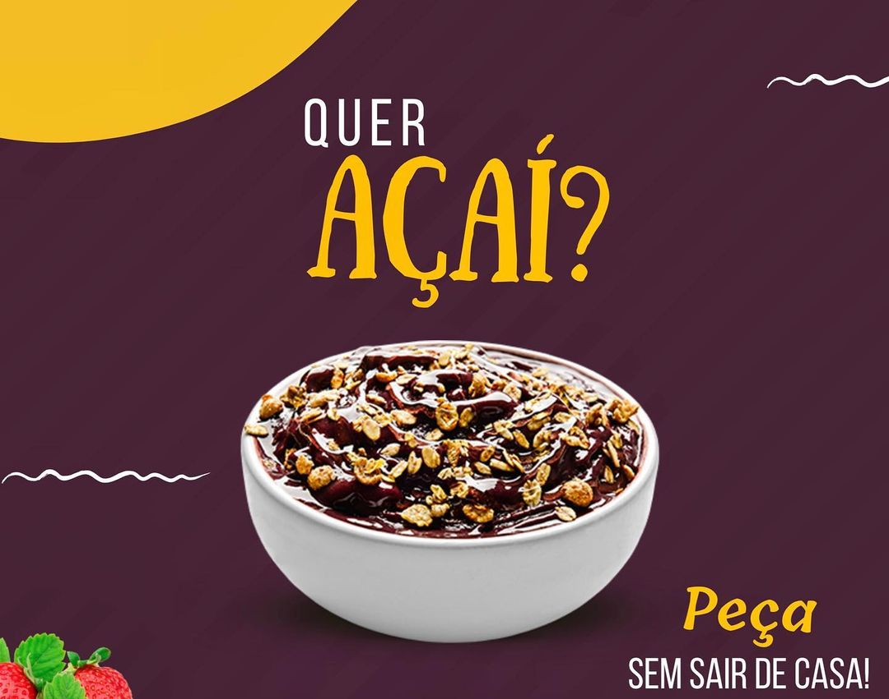

Açaí do Raul
Home
Produtos
Acompanhamentos
Contatos
Localização
BENEFÍCIOS DO AÇAÍ:
Combate o envelhecimento;
Derruba o colesterol;
Fortalece o sistema imune e previne infecções;
Previne doenças degenerativas, como o Alzheimer;
Melhora o funcionamento dos intestinos.

Temos mais de 30 opções de acompanhamentos para seu açaí.
Selecione entre os mais variados acompanhamentos do nosso cardapio e monte o seu próprio açaí!